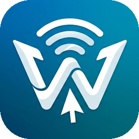

Win Connect
por Daphtronic
Usa el mouse y el teclado de tu PC con Windows en tu celular o tablet Android, por Wi‑Fi o Bluetooth, como si fuera otra pantalla.
Cómo empezar
- Instala Win Connect en el celular y en la PC.
- En el celular, activa la accesibilidad y toca Iniciar servicio.
- En la PC, en el icono de Win Connect junto al reloj: Conectar por Wi‑Fi → tu celular → escribe el código que muestra la app.